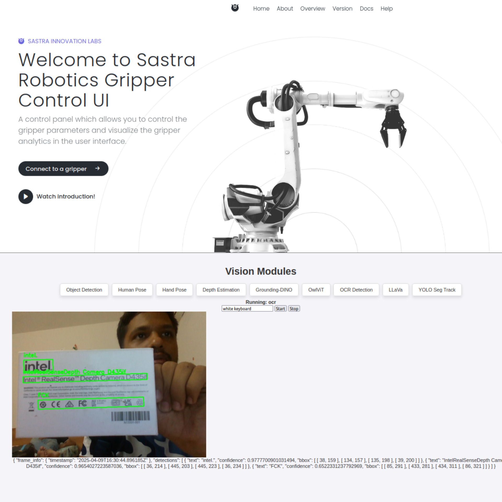
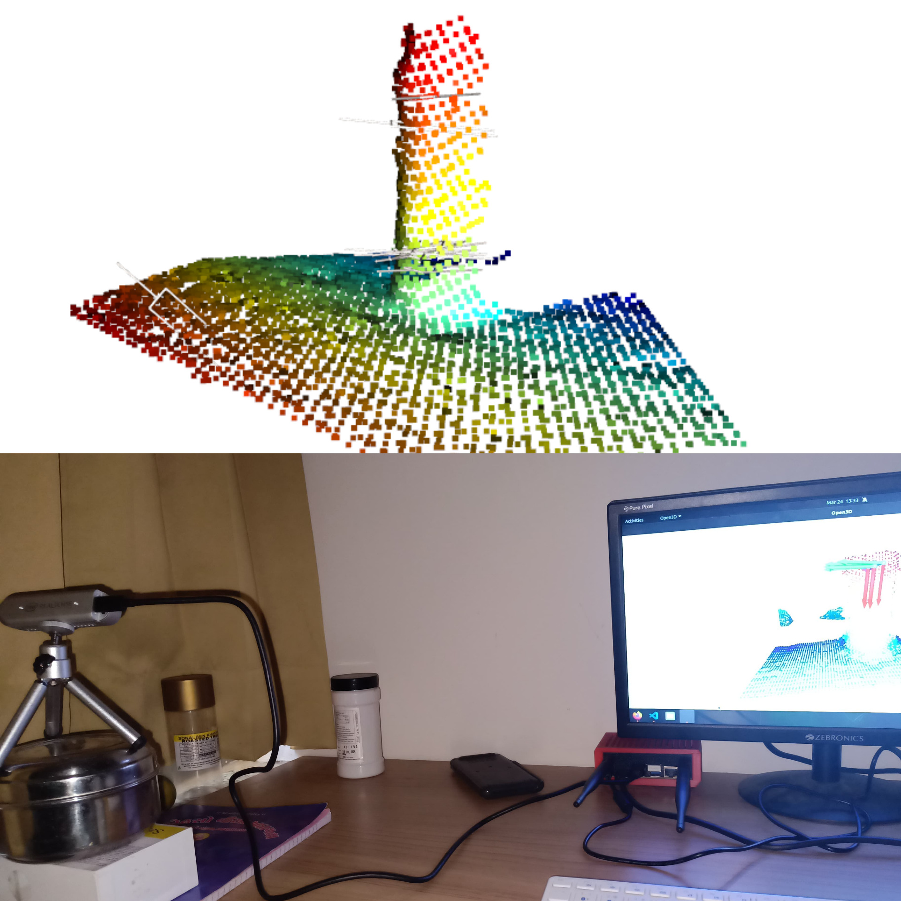
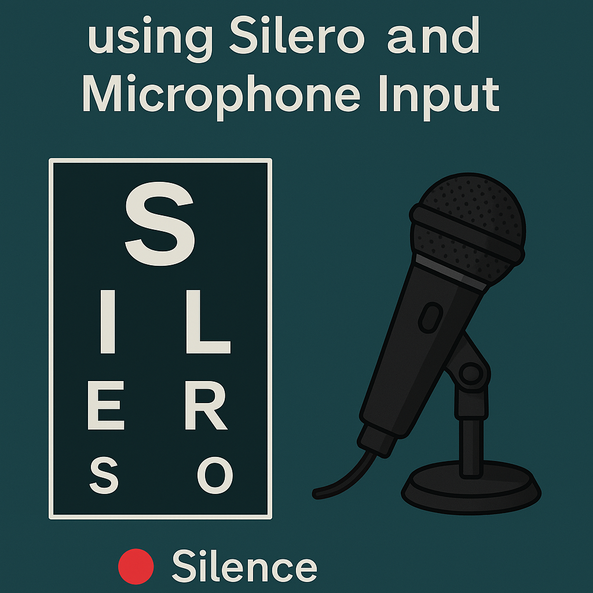
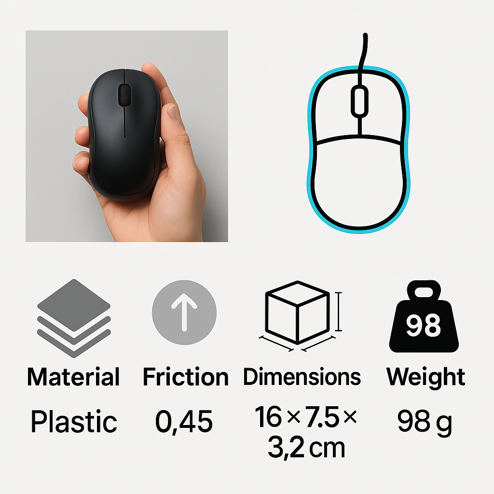

Experience
- Optimized multiple AI vision modules for Jetson Orin NX deployment.
- Developed modular gripper system with real-time TCP and WebSocket communication.
- Integrated motor control between ESP32 and Ethernet module using UART/Serial and socket communication.
- Led development of real-time 6D pose estimation with < 5cm error on live objects.
- Created a 3D reconstruction pipeline improving scene fidelity by 20%.
- Developed ROS packages for an autonomous car prototype using Jetson Nano.
Skills
Programming Languages: Python, C++, Java, R, MATLAB
Libraries & Frameworks: Asyncio, ZeroMQ, PyTorch, TensorFlow, Open3D, Flask, NumPy
Computer Vision & AI: CLIP, ViT, VLM/LLMs, NeRF, LoFTR
Theory: Robotics and Control Systems
Edge Device Optimization: Jetson Orin NX
Technologies: ROS, Gazebo, SLAM, Nav2, CUDA, WebSockets
Hardware: Arduino, ESP32, Raspberry Pi
Tools: Docker, Conda, Git, Fusion 360 (URDF)
Projects
|  |
Gripper System with SDK + UI
Modular, node-based system for controlling and monitoring a robotic gripper with real-time visual feedback and perception for interactive manipulation. Includes a user interface and SDK for system control and visualization. Built with ZeroMQ, Asyncio, and multi-threaded architecture. |
|  |
Grasp Detection for Multiple Objects
6-DoF grasp detection in cluttered scenes using point clouds from RealSense depth cameras and Open3D TSDF integration. Implements learning-based grasp candidate generation and evaluation via a Dockerized API, enabling robust any-view grasping on edge devices. |
 |
Live Pose – 6DoF Pose Estimation
Python package for real-time 6-DoF pose estimation of objects using CAD models and depth camera input. Cross-platform deployment supported via Docker on Jetson and native Windows. Includes object masking and custom 3D model support. |
 |
Object-Level 3D Reconstruction
Reconstructs high-fidelity object shapes from RGB-D data using NeRF and LoFTR. Interactive mask-based segmentation and boundary selection enable accurate geometry extraction, with 15+ stars on GitHub. |
|  |
Real-Time Voice Activity Detection (VAD)
Lightweight speech detection tool using a deep learning model (Silero) for live microphone input. Terminal-based feedback with modular support for noise suppression, speaker diarization, and future audio pipeline extensions. |
|  |
Object Property Detection
System to estimate material, dimensions, weight, and surface friction from images using VLMs, LLMs, CLIP, and SAM2. Tested and compared pipelines for speed and accuracy to aid robotic grasp planning and manipulation. |
 |
Multi-Purpose Differential Drive Robot
Versatile ROS2 simulation environment in Gazebo with modular sensors and full SLAM + RGB-D vision stack. Supports YOLO, MiDaS, teleoperation, and real-time 3D mapping for indoor navigation scenarios. |
 |
ROS2 Perception Modules – YOLO + MiDaS
Modular ROS2 nodes for real-time object detection (YOLOv8) and depth estimation (MiDaS) integrated with Gazebo streams. Publishes detection and depth topics for RViz visualization, designed to be plug-and-play with bot\_spawn. |
 |
Gesture Controlled Car
Wireless ESP32/ESP8266-based car using computer vision for gesture commands. Real-time control implemented with custom hardware and MediaPipe for detection. |
 |
Wall Maze Solver Bot
Robot designed with PID control and obstacle avoidance, built using Arduino. Winner of 2nd Prize @ MindBend, SVNIT. |
 |
Line Following Maze Solver
PID-based bot using 5-IR sensor array and dry-run logic to solve printed mazes efficiently. Finalist at IIT Bombay Techfest (Micromouse competition). |